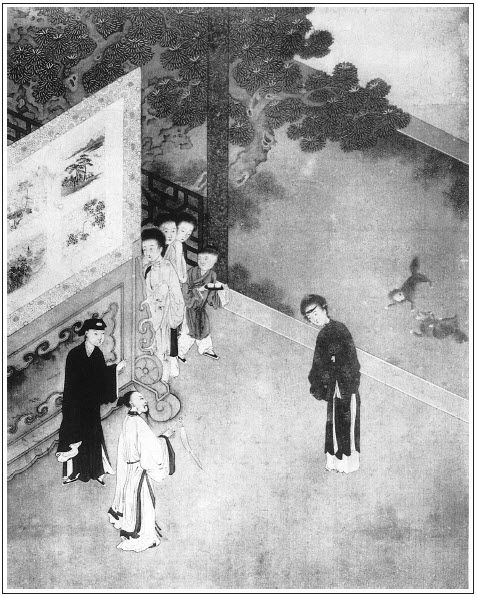

張回：此回乃一部大關鍵也。上文二十八回一一寫出來之人，至此回方一一為之遙斷結果。蓋作者恐後文順手寫去，或致錯亂，故一一定其規模，下文皆照此結果此數人也。此數人之結果完，而書亦完矣。直謂此書至此結亦可。
看他寫眾婦人出來看相，各各不同。月娘上來，眾妄同觀看。李嬌兒自己過來。月娘叫孟三姐：「你也相相。」神仙即接著相，至於金蓮，不肯出來，必用再三推之方出。瓶兒是西門令其相。雪娥、大姐是月娘令其相。夫大姐本非局中正經腳色，因不便令敬濟混入，則用大姐。蓋大姐相，而敬濟之結果已過半矣，故此處不相陳敬濟。
何以不便入敬濟？蓋西門之待敬濟，半以奴隸待之，故不入敬濟。所以襯西門市井人，待婿之薄，而又特隱敬濟。使文字有參差之致也。
上文既於前回紅鞋之餘波，引下金蓮之作惡不厭中，劈空插神仙一段，下即接「蘭湯午戰」。見金蓮毫無儆省悔過之心；而西門適聽神仙貪花之說，即白日宣淫。見作惡者雖神仙亦不得化之改也。
西門必用子平風鑒，兩番描出，又與眾人不同。
凡小說，必用畫像。如此回凡《金瓶》內有名人物，皆已為之描神追影，讀之固不必再畫。而善畫者，亦可即此而想其人，庶可肖影，以應其言語動作之態度也。
詞曰：
新涼睡起，蘭湯試浴郎偷戲。去曾嗔怒，來便生歡喜。奴道無心，郎道奴如此。情如水，易開難斷，若個知生死。
──右調《點絳唇》

話說到次日，潘金蓮早起，打發西門慶出門。記掛著要做那紅鞋，繡眉偏是這些留心。張夾鞋六十一。拿著針線筐兒，往翡翠軒台基兒上坐著，描畫鞋扇。張夾鞋六十二。使春梅請了李瓶兒來到。李瓶兒問道：「姐姐，你描金的是甚麼？」金蓮道：「要做一雙大紅鞋素緞子白綾平底鞋兒，鞋尖上扣繡鸚鵡摘桃。」張夾鞋六十三。李瓶兒道：「我有一方大紅十樣錦緞子，也照依姐姐描恁一雙兒。我做高低的罷。」於是取了針線筐，兩個同一處做。金蓮描了一隻丟下，說道：「李大姐，你替我描這一隻，等我後邊把孟三姐叫了來。他昨日對我說，他也要做鞋哩。」張夾鞋六十四。一直走到後邊。玉樓在房中倚著護炕兒，也衲著一隻鞋兒哩。張夾鞋六十五。看見金蓮進來，說道：「你早辦！」金蓮道：「我起來的早，打發他爹往門外與賀千戶送行去了。教我約下李大姐，花園裡趕早涼做些生活。張旁一謊。我才描了一隻鞋，教李大姐替我描著，逕來約你同去，咱三個一搭兒裡好做。」因問：「你手裡衲的是甚麼鞋？」張夾鞋六十六。玉樓道：「是昨日你看我開的那雙玄色緞子鞋。」張夾鞋六十七。金蓮道：「你好漢！又早衲出一隻來了。」玉樓道：「那只昨日就衲好了，這一隻又衲了好些了。」金蓮接過看了一回，說：「你這個，到明日使甚麼雲頭子？」玉樓道：「我比不得你每小後生，花花黎黎。繡旁口角入情。我老人家了，使羊皮金緝的雲頭子罷，周圍拿紗綠線鎖，好不好？」金蓮道：「也罷。你快收拾，咱去來，李瓶兒那裡等著哩。」玉樓道：「你坐著吃了茶去。」金蓮道：「不吃罷，拿了茶，那裡去吃來。」玉樓吩咐蘭香頓下茶送去。兩個婦人手拉著手兒，袖著鞋扇，逕往外走。吳月娘在上房穿廊下坐，便問：「你每那去？」金蓮道：「李大姐使我替他叫孟三兒去，與他描鞋。」繡旁開口便是謊，妙。張旁又一謊。張夾鞋六十九。（原批無序六十九。）說著，一直來到花園內。
三人一處坐下，拿起鞋扇，你瞧我的，我瞧你的，繡旁必至之情。都瞧了一遍。玉樓便道：「六姐，你平白又做平底子紅鞋做甚麼？張夾鞋七十。不如高低好看。你若嫌木底子響腳，也似我用氈底子，卻不好？」繡眉分明要說睡鞋，卻從平底、高底慢慢襯入，何等苦心細脈。金蓮道：「不是穿的鞋，是睡鞋。張夾鞋七十一。他爹因我那只睡鞋，張夾鞋七十二。被小奴才兒偷去弄油了，吩咐教我從新又做這雙鞋。」張夾鞋七十三。玉樓道：「又說鞋哩，張夾鞋七十四。這個也不是舌頭，文旁不是舌頭，而是斧頭。李大姐在這裡聽著。昨日因你不見了這只鞋，張夾鞋七十五。他爹打了小鐵棍兒一頓，說把他打的躺在地下，死了半日。惹的一丈青好不在後邊海罵，罵那個淫婦王八羔子學舌，打了他恁一頓，早是活了，若死了，淫婦、王八羔子也不得清潔！俺再不知罵的是誰。落後小鐵棍兒進來，大姐姐問他：『你爹為甚麼打你？』小廝才說：『因在花園裡耍子，拾了一隻鞋，張夾鞋七十六。問姑夫換圈兒來。不知是甚麼人對俺爹說了，教爹打我一頓。我如今尋姑夫，問他要圈兒去也。』說畢，一直往前跑了。原來罵的『王八羔子』是陳姐夫。繡眉隱含著淫婦，罵的是金蓮，卻不說破，妙甚。張旁所罵淫婦，不言可知。早是只李嬌兒在旁邊坐著，大姐沒在跟前，若聽見時，又是一場兒。」金蓮道：「大姐姐沒說甚麼？」玉樓道：「你還說哩，大姐姐好不說你哩！文旁玉樓豈是安分婦人？其不滿月娘處，隨便帶出，其意總以不做老大為恨也，又不自己出頭，卻來調唆金蓮，險人哉！說：『如今這一家子亂世為王，九條尾狐狸精出世了，把昏君禍亂的貶子休妻，想著去了的來旺兒小廝，好好的從南邊來了，東一帳西一帳，說他老婆養著主子，又說他怎的拿刀弄杖，生生兒禍弄的打發他出去了，把個媳婦又逼的吊死了。如今為一隻鞋子，張夾鞋七十七。又這等驚天動地反亂。你的鞋好好穿在腳上，張夾鞋七十八。怎的教小廝拾了？想必吃醉了，在花園裡和漢子不知怎的餳成一塊，才掉了鞋。張夾鞋七十九。如今沒的摭羞，拿小廝頂缸，繡眉月娘只不開口，開口亦毒。張夾隱僻事，每不堪指說。又不曾為甚麼大事。』」金蓮聽了，道：「沒的扯𣭈淡！甚麼是『大事』？殺了人是大事了，奴才拿刀要殺主子！」向玉樓道：「孟三姐，早是瞞不了你，咱兩個聽見來興兒說了一聲，諕的甚麼樣兒的！你是他的大老婆，倒說這個話！你也不管，我也不管，教奴才殺了漢子才好。他老婆成日在你後邊使喚，你縱容著他不管，教他欺大滅小，和這個合氣，和那個合氣。各人冤有頭，債有主，你揭條我，我揭條你，張夾正是金蓮用計處。吊死了，你還瞞著漢子不說。早是苦了錢，好人情說下來了，不然怎了？繡眉壞人多此一念成之。你這等推乾淨，說面子話兒，左右是，左右我調唆漢子！張夾惡人大似如斯。也罷，若不教他把奴才老婆、漢子一條提攆的離門離戶也不算！恆數人挾不到我井裡頭！」玉樓見金蓮粉面通紅，惱了，又勸道：「六姐，你我姐妹都是一個人，我聽見的話兒，有個不對你說？說了，只放在你心裡，休要使出來。」繡眉告訴了又勸，學舌人往往如此。金蓮不依他。到晚等的西門慶進入他房來，一五一十告西門慶說：「來昭媳婦子一丈青怎的在後邊指罵，說你打了他孩子，要邏楂兒和人嚷。」這西門慶不聽便罷，聽了記在心裡。到次日，要攆來昭三口子出門。多虧月娘再三攔勸下，不容他在家，打發他往獅子街房子裡看守，替了平安兒來家守大門。後次月娘知道，甚惱金蓮，不在話下。張眉上既金、瓶各立門戶，後即接「定終身」，然金蓮終身死在與月娘離。此處以小事一映，正是「冰鑒」影子。張夾以下特起一波，卻是正意。
西門慶一日正在前廳坐，忽平安兒來報：「守備府周爺張夾必用守備送，為春梅起見也。差人送了一位相面先生，名喚吳神仙，在門首伺候見爹。」西門慶喚來人進見，遞上守備帖兒，然後道：「有請。」須臾，那吳神仙頭戴青布道巾，身穿布袍草履，腰繫黃絲雙穗絛，手執龜殼扇子，自外飄然進來。年約四十之上，生得神清如長江皓月，貌古似太華喬松。原來神仙有四般古怪：身如松，聲如鐘，坐如弓，走如風。但見他：
能通風鑒，善究子平。觀乾象，能識陰陽；察龍經，明知風水。五星深講，三命秘談。審格局，決一世之榮枯；觀氣色，定行年之休咎。若非華岳修真客，定是成都賣卜人。
西門慶見神仙進來，忙降階迎接，接至廳上。神仙見西門慶，長揖稽首就坐。須臾茶罷。西門慶動問神仙：「高名雅號，仙鄉何處，因何與周大人相識？」那吳神仙欠身道：「貧道姓吳名奭，道號守真。張夾言無適而不守真之人也。本貫浙江仙遊人。自幼從師天台山紫虛觀出家。雲遊上國，因往岱宗訪道，道經貴處。周老總兵相約，看他老夫人目疾，張夾又為春梅作正之地。特送來府上觀相。」西門慶道：「老仙長會那幾家陰陽？道那幾家相法？」神仙道：「貧道粗知十三家子平，善曉麻衣相法，又曉六壬神課。常施藥救人，不愛世財，隨時住世。」西門慶聽言，益加敬重，誇道：「真乃謂之神仙也。」一面令左右放桌兒，擺齋管待。神仙道：「貧道未道觀相，豈可先要賜齋。」張夾神仙亦作套語。西門慶笑道：「仙長遠來，一定未用早齋。待用過，看命未遲。」於是陪著神仙吃了些齋食素饌，抬過桌席，拂抹乾淨，討筆硯來。張夾是武人行徑。
神仙道：「請先觀貴造，然後觀相尊容。」繡眉四柱俱不合，想宋時算命如此。西門慶便說與八字：「屬虎的，二十九歲了，七月二十八日午時生。」這神仙暗暗十指尋紋，良久說道：「官人貴造：戊寅年，辛酉月，壬午日，丙午時。七月廿三日白戊，已交八月算命。月令提剛辛酉，理取傷官格。子平云：傷官傷盡復生財，財旺生官福轉來。立命申宮，七歲行運辛酉，十七行壬戌，二十七癸亥，三十七甲子，四十七乙丑。官人貴造，依貧道所講，元命貴旺，八字清奇，非貴則榮之造。但戊土傷官，生在七八月，身忒旺了。幸得壬午日干，丑中有癸水，水火相濟，乃成大器。丙午時，丙合辛生，後來定掌威權之職。一生盛旺，快樂安然，發福遷官，主生貴子。為人一生耿直，幹事無二，喜則合氣春風，怒則迅雷烈火。一生多得妻財，不少紗帽戴。繡眉「不少」二字微詞，寫出不是正路。張夾「不少」二字妙。臨死有二子送老。張夾一卵不有二子乎！今歲丁未流年，丁壬相合，目下丁火來克，克我者為官為鬼，必主平地登雲之喜，添官進祿之榮。大運見行癸亥，戊土得癸水滋潤，定見發生。目下透出紅鸞天喜，定有熊羆之兆。又命宮驛馬臨申，不過七月必見矣。」西門慶問道：「我後來運限如何？」神仙道：「官人休怪我說，但八字中不宜陰水太多，後到甲子運中，將壬午衝破了，又有流星打攪，不出六六之年，主有嘔血流濃之災，骨瘦形衰之病。」西門慶問道：「目下如何？」神仙道：「目今流年，日逢破敗五鬼在家吵鬧，張旁又找蕙蓮一句。些小氣惱，不足為災，都被喜氣神臨門衝散了。」西門慶道：「命中還有敗否？」神仙道：「年趕著月，月趕著日，實難矣。」
西門慶聽了，滿心歡喜，便道：「先生，你相我面如何？」神仙道：「請尊容轉正。」西門慶把座兒掇了一掇。神仙相道：「夫相者，有心無相，相逐心生；有相無心，相隨心往。吾觀官人：頭圓項短，定為享福之人；體健筋強，決是英豪之輩；天庭高聳，一生衣祿無虧；地閣方圓，晚歲榮華定取。此幾樁兒好處。還有幾樁不足之處，貧道不敢說。」西門慶道：「仙長但說無妨。」神仙道：「請官人走兩步看。」西門慶真個走了幾步。神仙道：「你行如擺柳，必主傷妻；若無刑克，必損其身。妻宮克過方好。」西門慶道：「已刑過了。」神仙道：「請出手來看一看。」西門慶舒手來與神仙看。神仙道：「智慧生於皮毛，苦樂觀於手足。細軟豐潤，必享福祿之人也。兩目雌雄，必主富而多詐；張夾畫一小人。眉生二尾，一生常自足歡娛；根有三紋，中歲必然多耗散；奸門紅紫，一生廣得妻財；黃氣發於高曠，旬日內必定加官；紅色起於三陽，今歲間必生貴子。又有一件不敢說，淚堂豐厚，亦主貪花；且喜得鼻乃財星，驗中年之造化；承漿地閣，管來世之榮枯。
承漿地閣要豐隆，准乃財星居正中。
生平造化皆由命，相法玄機定不容。」
神仙相畢，西門慶道：「請仙長相相房下眾人。」一面令小廝：「後邊請你大娘出來。」於是李嬌兒、孟玉樓、潘金蓮、李瓶兒、孫雪娥等眾人都跟出來，在軟屏後潛聽。神仙見月娘出來，連忙道了稽首，也不敢坐，就立在旁邊觀相。端詳了一回，說：「娘子面如滿月，家道興隆；唇若紅蓮，衣食豐足，必得貴而生子；聲響神清，必益夫而發福。請出手來。」月娘從袖中露出十指春蔥來。神仙道：「乾薑之手，女人必善持家，照人之鬢，坤道定須秀氣。這幾樁好處。還有些不足之處，休怪貧道直說。」西門慶道：「仙長但說無妨。」「淚堂黑痣，若無宿疾，必刑夫；眼下皴紋，亦主六親若冰炭。
女人端正好容儀，緩步輕如出水龜。
行不動塵言有節，無肩定作貴人妻。」
相畢，月娘退後。西門慶道：「還有小妾輩，請看看。」於是李嬌兒過來。神仙觀看良久：「此位娘子，額尖鼻小，非側室，必三嫁其夫；肉重身肥，廣有衣食而榮華安享；肩聳聲泣，不賤則孤；鼻樑若低，非貧即夭。繡眉只十六字，形容得李嬌兒不堪晤對，下筆惡甚。請步幾步我看。」李嬌兒走了幾步。神仙道：
額尖露背並蛇行，早年必定落風塵。
假饒不是娼門女，也是屏風後立人。
相畢，李嬌兒下去。吳月娘叫：「孟三姐，你也過來相一相。」神仙觀道：「這位娘子，三停平等，一生衣祿無虧；六府豐隆，晚歲榮華定取。平生少疾，皆因月孛光輝；到老無災，大抵年宮潤秀。張夾看他寫玉樓，全無一毫褒貶，可知寓在此人。請娘子走兩步。」玉樓走了兩步，神仙道：
口如四字神清澈，溫厚堪同掌上珠。
威命兼全財祿有，終主刑夫兩有餘。張夾一句丰采，二句性情，三句命運，四句作者患難。所以雲作者必遭史公之厄而著書也。
玉樓相畢，叫潘金蓮過來。那潘金蓮只顧嘻笑，不肯過來。繡眉到他便有許多韻致，自令人改觀。月娘催之再三，方才出見。神仙抬頭觀看這個婦人，沉吟半日，方才說道：張旁神仙相又變。「此位娘子，發濃鬢重，繡旁嫣甚，媚甚。光斜視以多淫；臉媚眉彎，身不搖而自顫。面上黑痣，必主刑夫；張旁可雲冰鑒無遁形。唇中短促，終須壽夭。
舉止輕浮惟好淫，
眼如點漆壞人倫。
月下星前長不足，張旁神處在此。
雖居大廈少安心。」
相畢金蓮，西門慶又叫李瓶兒上來，教神仙相一相。神仙觀看這個女人：「皮膚香細，繡旁可愛。乃富室之女娘；容貌端莊，乃素門之德婦。只是多了眼光如醉，繡旁畫。主桑中之約；眉眉靨生，月下之期難定。觀臥蠶明潤而紫色，必產貴兒；體白肩圓，必受夫之寵愛。常遭疾厄，只因根上昏沉；頻遇喜祥，蓋謂福星明潤。此幾樁好處。還有幾樁不足處，娘子可當戒之：山根青黑，三九前後定見哭聲；法令細繵，雞犬之年焉可過？慎之！慎之！
花月儀容惜羽翰，平生良友鳳和鸞。
朱門財祿堪依倚，莫把凡禽一樣看。」
相畢，李瓶兒下去。月娘令孫雪娥出來相一相。神仙看了，說道：「這位娘子，體矮聲高，額尖鼻小，繡旁八字更醜。雖然出谷遷喬，但一生冷笑無情，作事機深內重。只是吃了這四反的虧，後來必主凶亡。夫四反者：唇反無稜，耳反無輪，眼反無神，鼻反不正故也。
燕體蜂腰是賤人，眼如流水不廉真。
常時斜倚門兒立，不為婢妾必風塵。」
雪娥下去，月娘教大姐上來相一相。神仙道：「這位女娘，鼻樑低露，破祖刑家；聲若破鑼，繡眉大姐容貌如此，豈是敬濟對手。傢俬消散。面皮太急，雖溝洫長而壽亦夭；行如雀躍，處家室而衣食缺乏。不過三九，當受折磨。
惟夫反目性通靈，父母衣食僅養身。
狀貌有拘難顯達，不遭惡死也艱辛。」
大姐相畢，教春梅也上來教神仙相相。神仙睜眼兒見了春梅，年約不上二九，頭戴銀絲雲髻兒，白線挑衫兒，桃紅裙子，藍紗比甲兒，纏手纏腳出來，道了萬福。神仙觀看良久，相道：「此位小姐五官端正，骨格清奇。發細眉濃，稟性要強；神急眼圓，為人急燥。繡旁四語是春梅一幅小像。山根不斷，必得貴夫而生子；兩額朝拱，主早年必戴珠冠。行步若飛仙，聲響神清，必益夫而得祿，三九定然封贈。但吃了這左眼大，早年克父；右眼小，週歲克娘。繡眉神仙諸相雖射覆不失，然過於削直，恐近時術家所難。左口角下這一點黑痣，主常沾啾唧之災；右腮一點黑痣，一生受夫敬愛。
天庭端正五官平，口若塗砂行步輕。
倉庫豐盈財祿厚，一生常得貴人憐。」
神仙相畢，眾婦女皆咬指以為神相。西門慶封白銀五兩與神仙，又賞守備府來人銀五錢，拿拜帖回謝。吳神仙再三辭卻，說道：「貧道雲遊四方，風餐露宿，要這財何用？張旁財亦有無用之時。決不敢受。」西門慶不得已，拿出一疋大布：「送仙長一件大衣如何？」神仙方才受之，令小童接了，稽首拜謝。西門慶送出大門，飄然而去。正是：
柱杖兩頭挑日月，葫蘆一個隱山川。
西門慶回到後廳，問月娘：「眾人所相何如？」月娘道：「相的也都好，只是三個人相不著。」西門慶道：「那三個相不著？」月娘道：「相李大姐有實疾，到明日生貴子，他見今懷著身孕，這個也罷了。相咱家大姐到明日受磨折，不知怎的磨折？相春梅後來也生貴子，或者你用好他，各人子孫也看不見。我只不信，張旁含醋意。說他後來戴珠冠，有夫人之分。端的咱家又沒官，那討珠冠來？就有珠冠，也輪不到他頭上。」張旁春梅直至永福寺，此氣方消。西門慶笑道：「他相我目下有平地登雲之喜，加官進祿之榮，我那得官來？他見春梅和你俱站在一處，又打扮不同，戴著銀絲雲髻兒，只當是你我親生女兒一般，或後來疋配名門，招個貴婿，故說有珠冠之分。繡眉此等議論，揆情度勢，可謂十得其九，然俱是暗中揣摹，毫不著。讀此可銷人炎涼輕薄之念。自古算的著命，算不著好，相逐心生，相隨心滅。周大人送來，咱不好囂了他的，教他相相除疑罷了。」說畢，月娘房中擺下飯，打發吃了飯。
西門慶手拿芭蕉扇兒，信步閒遊。來花園大卷棚聚景堂內，周圍放下簾櫳，四下花木掩映。正值日午，只聞綠陰深處一派蟬聲，忽然風送花香，襲人撲鼻。有詩為證：
綠樹蔭濃夏日長，樓台倒影入池塘。
水晶簾動微風起，一架薔薇滿院香。
西門慶坐於椅上以扇搖涼。只見來安兒、畫童兒兩個小廝來井上打水。西門慶道：「教一個來。」來安兒忙走向前，西門慶吩咐：「到後邊對你春梅姐說，有梅湯提一壺來我吃。」來安兒應諾去了。半日，只見春梅家常戴著銀絲雲髻兒，手提一壺蜜煎梅湯，笑嘻嘻走來，繡眉相得歡喜，故笑。問道：「你吃了飯了？」西門慶道：「我在後邊吃了。」春梅說：「嗔道不進房裡來。說你要梅湯吃，等我放在冰裡湃一湃你吃。」繡旁知趣。西門慶點頭兒。春梅湃上梅湯，走來扶著椅兒，取過西門慶手中芭蕉扇兒替他打扇，繡旁更趣。問道：「頭裡大娘和你說甚麼？」繡旁問得有成心。西門慶道：「說吳神仙相面一節。」春梅道：「那道士平白說戴珠冠，教大娘說『有珠冠，只怕輪不到他頭上』。常言道凡人不可貌相，海水不可斗量，從來旋的不圓砍的圓，各人裙帶上衣食，怎麼料得定？莫不長遠只在你家做奴才罷！」繡旁直與後出門不哭相應。繡眉春梅心眼只寬，非一味說大話。西門慶笑道：「小油嘴兒，你若到明日有了娃兒，就替你上了頭。」於是把他摟到懷裡，手扯著手兒頑耍，問道：「你娘在那裡？怎的不見？」張旁過下無痕。春梅道：「娘在屋裡，教秋菊熱下水要洗浴。等不的，就在床上睡了。」西門慶道：「等我吃了梅湯，鬼混他一混去。」於是春梅向冰盆內倒了一甌兒梅湯，與西門慶呷了一口，湃骨之涼，透心沁齒，如甘露灑心一般。
須臾吃畢，搭伏著春梅肩膀兒，轉過角門來到金蓮房中。看見婦人睡在正面一張新買的螺鈿床上。原是因李瓶兒房中安著一張螺鈿敞廳床，婦人旋教西門慶使了六十兩銀子，替他也買了這一張螺鈿有欄干的床。兩邊隔扇都是螺鈿攢造花草翎毛，掛著紫紗帳幔，錦帶銀鉤。張旁前玉樓有金漆床，金、瓶二人又有螺鈿床，一時針線細極，卻都是為春梅一哭作地也。婦人赤露玉體，止著紅綃抹胸兒，繡旁銷魂。蓋著紅紗衾，枕著鴛鴦枕，張夾比武大家自是不同。在涼席之上，睡思正濃。西門慶一見，不覺淫心頓起，令春梅帶上門出去，悄悄脫了衣褲，上的床來，掀開紗被，見他玉體相互掩映，戲將兩股輕開，按麈柄徐徐插入牝中，比及星眼驚欠之際，已抽拽數十度矣。婦人睜開眼，笑道：「怪強盜，三不知多咱進來？奴睡著了，就不知道。奴睡的甜甜的，摑混死了我！」繡旁違心語。張旁違心語。西門慶道：「我便罷了，若是個生漢子進來，你也推不知道罷？」繡旁想當然耳。婦人道：「我不好罵的，誰人七個頭八個膽，敢進我這房裡來！只許你恁沒大沒小的罷了。」張夾此語似對敬濟說者。
原來婦人因前日西門慶在翡翠軒誇獎李瓶兒身上白淨，就暗暗將茉莉花蕊兒攪酥油定粉，把身上都搽遍了，繡旁婦人邀寵亦不易。張旁此是立門戶後第一下手著。搽的白膩光滑，異香可愛，欲奪其寵。西門慶見他身體雪白，穿著新做的兩隻大紅睡鞋。一面蹲踞在上，兩手兜其股，極力而提之，垂首觀其出入之勢。婦人道：「怪貨，只顧端詳甚麼？奴的身上黑，不似李瓶兒的身上白就是了。他懷著孩子，你便輕憐痛惜，俺每是拾的，由著這等掇弄。」繡眉開口便夾酸帶妒，所以為妙。張夾又點醋胎。西門慶問道：「說你等著我洗澡來？」婦人問道：「你怎得知道來？」西門慶道：「是春梅說的。」婦人道：「你洗，我叫春梅掇水來。」不一時把浴盆掇到房中，注了湯。二人下床來，同浴蘭湯，共效魚水之歡。洗浴了一回，西門慶乘興把婦人仰臥在浴板之上，張夾先安頓婦人。兩手執其雙足跨而提之，掀騰𢵞干，何止二三百回，其聲如泥中螃蟹一般響之不絕。婦人恐怕香雲拖墜，一手扶著雲鬢，繡旁好描畫。一手扳著盆沿，張夾是水戰。口中燕語鶯聲，百般難述。繡旁好描畫。怎見這場交戰？但見：
華池蕩漾波紋亂，翠幃高卷秋雲暗。才郎情動要爭持，愁色心忙顯手段。一個顫顫巍巍挺硬槍，一個搖搖擺擺弄鋼劍。一個捨死忘生往裡鑽，一個尤雲滯雨將功干。撲撲鼕鼕皮鼓催，嗶嗶啵啵鎗對劍。啪啪嗒嗒弄響聲，砰砰啪啪成一片。下下高高水逆流，洶洶湧湧盈清澗。滑滑𣺥𣺥怎生停，攔攔濟濟難存站。一來一往□□□，一動一撞東西探，熱氣騰騰妖雲生，紛紛馥馥香氣散。一個逆水撐船將玉股搖，一個稍公把舵將金蓮揝。一個紫騮猖獗逞威風，一個白面妖嬈遭馬戰。喜喜歡歡美女情，雄雄赳赳男兒願。翻翻復復盡歡娛，鬧鬧挨挨情摸亂。拖泥帶水兩情痴，殢雨尤雲都不辯。任他錦帳鳳鸞交，不似蘭湯魚水戰。你死我活更無休，千戰萬贏心膽戰。口口聲聲叫殺人，氣氣昂昂情不厭。古古今今廣鬧爭，不似這般水裡戰。夾批（此處詞句來自萬曆詞話本）。
華池蕩漾波紋亂，翠幃高卷秋雲暗。才郎情動逞風流，美女心歡顯手段。叭叭嗒嗒弄聲響，砰砰啪啪成一片。張夾八字寫盡。滑滑𣺥𣺥怎停住，攔攔濟濟難存站。張夾水戰。一個逆水撐船，將玉股搖；一個艄公把舵，將金蓮揝。拖泥帶水兩情癡，殢雨尤雲都不辯。任他錦帳鳳鸞交，不似蘭湯魚水戰。
二人水中戰鬥了一回，西門慶精洩而止。拭抹身體乾淨，撤去浴盆。止著薄纊短襦上床，安放炕桌果酌飲酒。教秋菊：「取白酒來與你爹吃。」又拿果餡餅與西門慶吃，恐怕他肚中飢餓。只見秋菊半日拿上一銀注子酒來。婦人才斟了一鐘，摸了摸冰涼的，就照著秋菊臉上只一潑，潑了一頭一臉，罵道：「好賊少死的奴才！我吩咐教你燙了來，如何拿冷酒與爹吃？你不知安排些甚麼心兒？」叫春梅：「與我把這奴才採到院子裡跪著去。」春梅道：「我替娘後邊捲裹腳去來，一些兒沒在跟前，你就弄下磣兒了。」那秋菊把嘴谷都著，口裡喃喃吶吶說道：「每日爹娘還吃冰湃的酒兒，誰知今日又改了腔兒。」張夾映葡萄架。婦人聽見罵道：「好賊奴才，你說甚麼？與我採過來！」叫春梅每邊臉上打與他十個嘴巴。春梅道：「皮臉，沒的打污濁了我手。娘只教他頂著石頭跪著罷。」於是不由分說，拉到院子裡，教他頂著塊大石頭跪著，張旁已為含恨下種子。不在話下。婦人從新叫春梅暖了酒來，陪西門慶吃了幾鐘，掇去酒桌，放下紗帳子來，吩咐拽上房門，兩個抱頭交股，體倦而寢。正是：
若非群玉山頭見，多是陽台夢裡尋。
文回文禹門云：作書難，看書亦難，批書尤難。未得其真，不求其細，一味亂批，是為酒醉雷公。
批者深惡月娘而深愛玉樓，至謂作者以玉樓自比，何其謬也。玉樓答張四之言，總以做大自居。迨至誑入門來，別有一大，是已大違其作大初心矣。自恨不能做大，遂移恨於做大者，直欲貶其大，廢其大，而改小為大。故一則曰：「大姐不管」。再則曰：「大姐姐不管」。不思西門慶行為，果大姐姐所能管所敢管乎？大姐能管，三娘亦能管矣。三娘不明管而暗唆金蓮管之，且不以正大管之，而以刻毒管之。若謂來旺之配，蕙蓮之死，玉樓不與謀，不加功，不知情，吾不信也。直欲殺其夫而奪其妻，又恐其妻之礙吾路也，遂一併殺之。此等管法，不如不管之為愈也。
金蓮之惡，全是玉樓足成之。金蓮不知，月娘不知，西門慶不知，看書者豈亦不知耶？金蓮之妒，明而淺，玉樓之妒，隱而深。金蓮之妒為固寵，玉樓之妒在謀嫡。若李嬌兒，本妓者出身，不在意中也。
試看此回，玉樓之唆金蓮，心事和盤托出矣。開口先說：「不是舌頭」，安心拉舌頭，卻又自己叫破，閱者信之乎？又直將陳姐夫舉出，在金蓮心坎上扎一針，好利害舌頭也。又云：「好不說你呢」，「亂世為王」數語，是月娘受西門慶叱時所說，不與此一事相干，其間果無增減舌頭乎？「你的鞋好好穿在腳上」以下數語，明明是玉樓深知其事，而作為月娘之言，恐月娘尚不能想到於此，真可謂舌上有刀。見金蓮粉面通紅，深幸其舌頭之得力，復又勸解之，並云「不要使出來」。既不要他使出來，你又何必說出來，是皆顯而易見。批者乃被其瞞過乎？玉樓果是賢良婦人乎？迨至金蓮與月娘冰炭，玉樓之計，得半之功矣。西門慶不死，殺月娘者，必玉樓也。
若謂相士，獨於玉樓毫無貶詞，遞以玉樓為諸婦之冠，為德貌兼全之人，其亦不思之甚奐，作者借相士點破諸人終身，不過玉樓得好結果耳。何能詳言其暖昧之事乎？若都指出金蓮謀殺親夫，瓶兒氣死本夫，不但無此情理，亦無此神仙。世無此事，書不成奇矣。昔人云：蓋棺論定。玉樓之妒月娘，有心而未成事，不似金蓮之妒瓶兒，必死之而後已，其事故昭昭可指也。故曰：陰險。能瞞粗人，不能瞞明眼人。但以成敗論，而誇張玉樓為全人，天下豈有一嫁再嫁，猶稱為賢良之婦哉？雖然，凡事順心者少，違心者多。玉樓之以金蓮為兵刃，欲殺月娘也。而人聽使者多，會意者少。金蓮不以上口殺月娘，而以下口先殺西門慶。
觀此回之水戰，當勃然變色，不當怦然動心。夫男女居室，常事也，戰則危事也。以男貪女愛，變而為性賭命換，此生死關頭也。西門慶已有數敵，乃屢遇此大敵，其戰而敗，敗而死，不必再看下文，早知其必死於金蓮上下口也，可不懼哉！然西門慶死，吳月娘生矣。
按：「至謂作者以玉樓自比，何其謬也。」系指吳神仙為玉樓相面時，竹坡所寫夾批與旁批。夾批云：「看他寫玉樓全無一毫褒貶，可知寓意在此人。」旁批云：「一句丰采，二句性情，三句命運，四句作者患難，所以雲作者必遭史公之厄而著書也。」